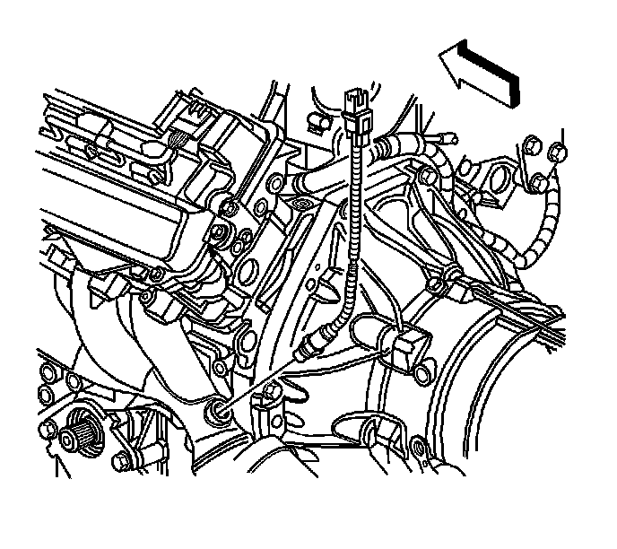

Heated Oxygen Sensor Replacement - Bank 2 Sensor 1
Heated Oxygen Sensor Replacement - Bank 2 Sensor 1
Removal Procedure
Notice: Refer to Oxygen Sensor Notice .
Important:
* Bank 2 on the LH2 engine in this vehicle is the left side of the engine while sitting in the driver seat.
* Sensor 1 is the sensor closest to the engine, or farthest towards the front of vehicle.
* A special anti-seize compound is used on the oxygen sensor threads. New service sensors should already have the compound applied to the threads. Coat the threads of a reused sensor with anti-seize compound P/N 5613695 or equivalent.

1. Remove the fuel injector sight shield. Refer to Fuel Injector Sight Shield Replacement (Service and Repair) .
2. Disconnect the oxygen sensor electrical connector from the engine wiring harness at the rear of the left head.
3. Note the wire routing and attachment points for reassembly.
4. Raise and support the vehicle. Refer to Lifting and Jacking the Vehicle (Service and Repair) .

5. Remove the oxygen sensor from the exhaust manifold.
Installation Procedure
Notice: Refer to Fastener Notice .
1. Install the heated oxygen sensor (HO2S) to the exhaust manifold.
Tighten the HO2S to 42 N.m (31 lb ft).
2. Lower the vehicle.
3. Route and attach the wiring as noted during disassembly.
4. Connect the oxygen sensor electrical connector to the engine wiring harness connector at the rear of the left head.
5. Install the fuel injector sight shield. Refer to Fuel Injector Sight Shield Replacement (Service and Repair) .